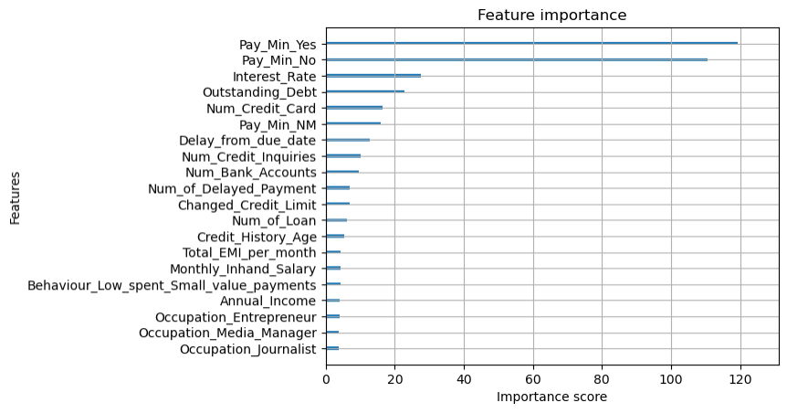
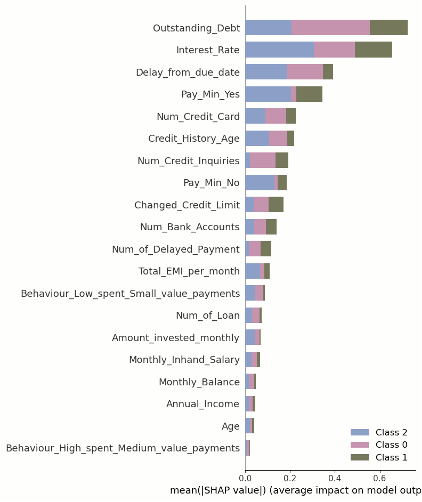
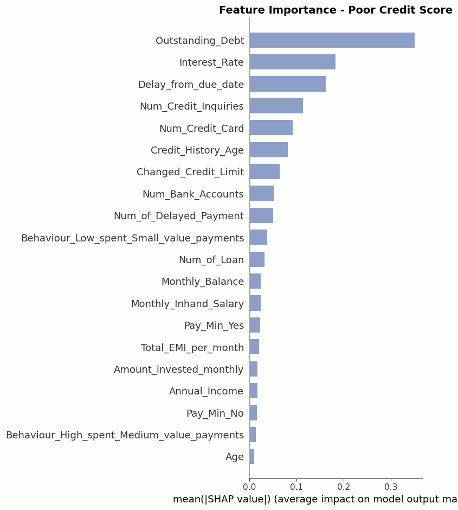

Metodología
Descripción detallada del proceso: datos, preprocesamiento, modelo y optimización.
Fuente y Estructura
El conjunto de datos presenta diversos problemas de calidad, tales como valores nulos, registros inconsistentes (por ejemplo, edades superiores a 100 años) y variables numéricas almacenadas como texto (por ejemplo, 38000_). Por ello, es necesario realizar un proceso de limpieza y preprocesamiento para la corrección de formatos, depuración de valores atípicos y la imputación adecuada de datos faltantes.
Distribución de Clases
El objetivo del proyecto es clasificar la calidad crediticia de cada individuo en tres categorías.
Limpieza de Datos
Para trabajar adecuadamente con la base de datos fue necesario realizar un proceso exhaustivo de limpieza y depuración. En una primera etapa, los valores faltantes o claramente incorrectos se reemplazaron por NaN, con el objetivo de estandarizar el tratamiento posterior mediante técnicas de imputación.
Tratamiento por variable
Customer_ID / Nombre
Se utilizó como identificador único para hacer match con el nombre del cliente y completar valores faltantes.
Edad / Annual_Income
Se eliminaron los caracteres _ para asegurar formato numérico adecuado.
Occupation
Registros con valor "_____" reemplazados por "Unknown". Se obtuvieron 16 categorías transformadas en dummies.
Monthly_Inhand_Salary
El salario se mantiene constante por persona. Valores faltantes imputados con forward fill y backward fill agrupando por cliente.
Número de cuentas bancarias / préstamos
Valores -1 y -100 reemplazados por NaN. Se eliminaron caracteres _.
Type_of_Loan
Los distintos productos se separaron usando comas como delimitador, generando variables dummy por cada tipo de crédito.
Delay_from_due_date / Pagos con retraso
Valores negativos en Delay se interpretaron como pagos anticipados. En número de pagos con retraso, valores negativos se reemplazaron por NaN.
Credit_Inquiries
Al ser un indicador acumulativo, se imputaron valores intermedios cuando el primero y el tercero coincidían, asignando al segundo el mismo valor.
Payment_Behaviour
El valor "!@9#%8" fue sustituido por "Unknown". Posteriormente se generaron variables dummy.
Credit_History_Age
Almacenada como texto tipo "X Years and Y Months". Se convirtió a años decimales (ej. 5 años y 6 meses → 5.5). Valores faltantes imputados sumando o restando 1/12 por cliente.
Monthly_Balance
Se eliminaron los caracteres _ y los valores negativos se establecieron como NaN al no ser consistentes con la naturaleza de la variable.
Variables Categóricas — Dummies
Dentro del conjunto de datos existen variables categóricas representadas en formato texto. En su formato original, estas variables no pueden ser procesadas directamente por la mayoría de los modelos de credit scoring, ya que dichos algoritmos requieren entradas numéricas.
Variables Transformadas
Relevancia de cada variable
Ocupación: puede estar asociada con estabilidad de ingresos.
Comportamiento de pago: refleja disciplina financiera.
Tipo de préstamo: puede indicar nivel de apalancamiento o exposición al riesgo.
Por qué One-Hot Encoding
Preserva la información cualitativa original.
Evita introducir supuestos incorrectos de jerarquía entre categorías.
Permite que el modelo capture de manera más precisa el impacto individual de cada característica sobre la calidad crediticia.
Detección y Tratamiento de Outliers
Durante el proceso de depuración se identificaron valores negativos en variables donde conceptualmente no son posibles. Estos registros fueron reemplazados por NaN y posteriormente tratados mediante técnicas de imputación, con el fin de mantener la consistencia lógica de la base de datos. En el caso de la edad, se acotó el rango entre 0 y 100 años, al considerarse el intervalo demográficamente razonable.
Tratamiento
Valores negativos → reemplazados por NaN e imputados.
Edad
Rango acotado entre 0 y 100 años por criterio demográfico.
Variables con valores extremos — no eliminados
En estas variables se observaron valores considerablemente elevados. No obstante, existen cientos e incluso miles de observaciones con magnitudes similares, lo que sugiere que no se trata de errores aislados de captura, sino de comportamientos extremos pero plausibles dentro de la población analizada. Su eliminación implicaría la pérdida de una proporción significativa de información relevante para el modelo.
Valores Faltantes — KNN Imputation
Para la imputación de los datos faltantes se consideró KNN Imputation como el método adecuado para este tipo de datos, ya que mantiene las relaciones complejas que existen entre distintas variables que pueden estar correlacionadas entre sí (Kaur, 2025).
Este método es coherente con patrones de comportamientos crediticios donde de manera natural se forman clusters, por ejemplo, personas en un rango de edad similar suelen tener ingresos y tipos de préstamos similares.
Ventajas sobre otros métodos
Mantiene relaciones complejas entre variables correlacionadas, a diferencia del promedio o mediana.
Coherente con los clusters naturales en comportamiento crediticio.
Tiene la capacidad de trabajar con variables dummies y continuas a la vez.
Proporciones Train-Test
La separación de variables se realizó de manera que X contuviera las variables independientes o características del modelo, mientras que y representa la variable objetivo Credit_Score. Se utilizó una semilla aleatoria con propósito de facilitar la reproducibilidad, garantizando que la partición sea siempre la misma al ejecutar el código múltiples veces.
Estratificación
Se hizo una estratificación para asegurar que la distribución de clases en la variable y se mantenga proporcional tanto en el conjunto de entrenamiento como en el de prueba. Esto es especialmente importante en problemas de clasificación con clases desbalanceadas, ya que, sin estratificación, podría ocurrir que alguna clase quede subrepresentada en el conjunto de prueba, afectando la evaluación del modelo.
Justificación del Baseline
Para el modelo base utilizado como punto de referencia se implementó una Regresión Logística utilizando todas las variables, tanto numéricas como categóricas obtenidas tras la limpieza de datos.
Por qué Regresión Logística
Modelo lineal con bajo costo computacional y menor riesgo de sobreajuste en comparación con modelos más complejos.
Ampliamente utilizado debido a su simplicidad, interpretabilidad y estabilidad.
Adecuada como modelo base (Bozagiu et al., 2025, p. 1238).
Resultados del Benchmark
El modelo clasifica correctamente el 55% de las observaciones en el conjunto de prueba. Si bien el nivel de precisión alcanzado no es alto, el modelo cumple adecuadamente su función como benchmark.
Utilidad como punto de referencia
Proporciona un punto de referencia objetivo y cuantificable que permitirá comparar el rendimiento del modelo propuesto posteriormente. De esta manera, será posible evaluar con mayor claridad si este aporta mejoras sustanciales en capacidad predictiva y justifica su mayor complejidad metodológica.
Matriz de Confusión
Los resultados se muestran también mediante la siguiente matriz de confusión:

XGBoost — Feature Importance
Para seleccionar las variables a utilizar en el modelo propuesto, se entrenó un modelo de XGBoost con los datos para extraer la importancia de las variables (feature importance), ya que este mostró el mejor rendimiento general para predecir el nivel de score crediticio en comparación con los demás modelos evaluados en el experimento realizado por Cao, He, Chen y Zhang (2018).
El dataset cuenta con más de 50 variables, por lo que se analizarán únicamente las 20 con mayor importancia, ya que el resto resultan insignificantes en comparación.

SHAP Values
Para complementar el método de selección de variables obtenido mediante feature importances de XGBoost, se calculan los SHAP values de todas las variables utilizadas en el modelo. Los SHAP values son un método que ayuda a explicar las predicciones de los modelos de machine learning, los cuales indican cuánto aporta cada una de las variables a la predicción.

La imagen anterior muestra el impacto de cada una de las variables en la predicción del modelo, desagregado en las tres clases del Credit Score, lo que permite identificar de manera específica la contribución de cada variable en cada clase.
Los scorings reactivos tienen como principal objetivo evaluar la calidad crediticia de las solicitudes de crédito realizadas y tratan de predecir la morosidad de los solicitantes en caso de que la operación fuera concedida (BBVA, 2013). Es por esto que también se analizarán los SHAP values específicos de la clase de Poor Credit Score.

Criterio 2 de 3
Como primer paso en la selección de variables, se estableció el siguiente criterio: si una variable aparecía en al menos dos de los tres análisis previamente presentados, superaba el filtro inicial.
Los 3 análisis considerados
Valores SHAP para las tres clases
Valores SHAP para la clase Poor Credit Score
Importancia de variables (feature importance)
Análisis de Separabilidad — Violin Plots
Una vez filtradas las variables bajo el criterio de "dos de tres", estas se analizaron mediante gráficas de violín con el objetivo de visualizar de manera clara la distribución de cada variable en las distintas clases. Para ello, las variables numéricas se recortaron hasta el percentil 95, con el fin de reducir la influencia de valores atípicos en las visualizaciones.
En esta sección se seleccionan aquellas variables que presentan una separabilidad clara en sus distribuciones entre clases, con el propósito de aprovechar al máximo posibles relaciones lineales, dado que posteriormente se empleará un modelo clásico.


Análisis de Correlación
Por último, se realizó un análisis de correlación, a partir del cual se concluyó que, debido a la alta correlación entre las variables Monthly Inhand Salary y Monthly Balance, no era necesario mantener ambas en el modelo.
Variable eliminada
Monthly Balance
Presentaba menor importancia frente a Monthly Inhand Salary.

Variables Finales Seleccionadas
Fuerte relación para identificar personas con Credit Score malo.
Clara separación entre Credit Score bueno y malo.
Buena separación entre los que tienen buen Credit Score y los demás.
Mientras menor sea la tasa, mejor el Credit Score.
Mientras menor sea el retraso, mejor el Credit Score.
Mientras menor sea el número de tarjetas, mejor el Credit Score.
A menor número de cuentas bancarias, mejor el Credit Score.
A mayor antigüedad del historial, mejor el Credit Score.
A mayor salario mensual disponible, mayor Credit Score.
Tendencia de mayor edad, mayor Credit Score.
De las dummies mejor puntuadas en feature importances.
De las dummies mejor puntuadas en feature importances.
De las dummies mejor puntuadas en feature importances.